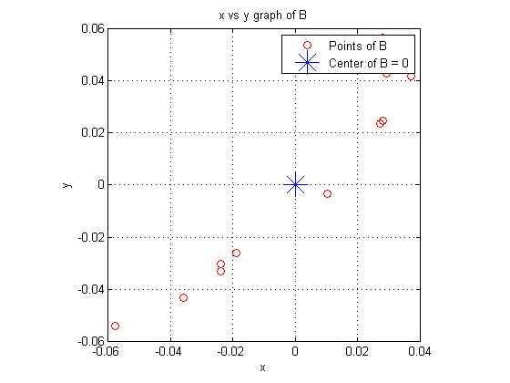
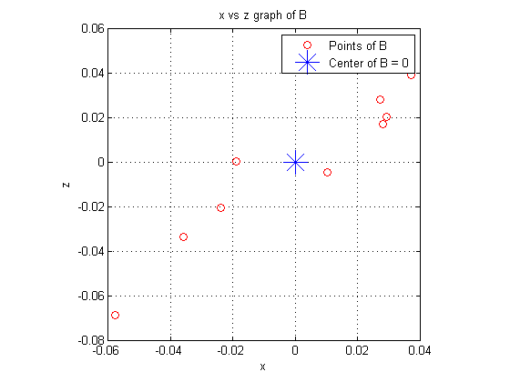
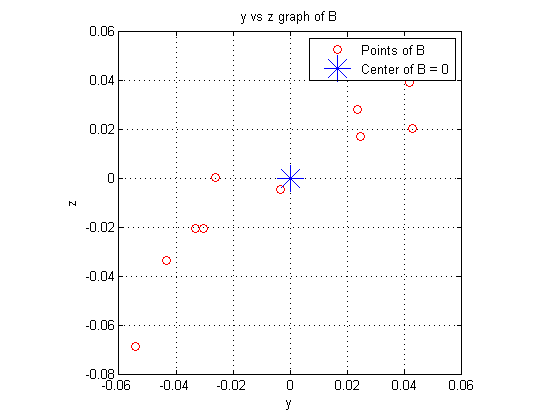

Applications to Image Processing and Statistics
This script will cover some basic applications of multivariate data, particularly in Statistics and Image Processing.
Hyuk Jin Kwon, hyukjink@sfu.ca
MACM 203 Final Project, April 11, 2013
Contents
Introduction
Say that we are studying a data set where for one object, we have multiple observations (variables). For example, let's say we are conducting a study on the age, height and weight of students at SFU. Then each individual will have 3 seperate pieces of information in the form of 3 variables. Data sets such as these are generally called multivariate data .
Consider this data set:
Ex. Self-reported Obesity in Canada of provinces in years 2003, 2005, and 2007 arranged into column vectors in chronological order.
(Data: Public Health Agency of Canada http://www.phac-aspc.gc.ca/publicat/2009/oc/index-eng.php. fig. 2)
Then we have 3 variables: 1 for provincial self reported obesity in 2003, 1 for obesity in 2005, and 1 for 2007.
Note: We have 10 provinces and the data for all of Canada. For simplicity, we will use Canada as an 11th province. Assume that all provinces share the same population and values given for each entry are weighed equally.
Then, define the 3 x 11 matrix A where the rows represent the years (variables) and the columns represent self reported obesity for a province (variable data for an individual). To visualize, imagine our matrix is the table: Years vs. Province, where entries indicate self-reported obesity.
Note: The order in which we place our variables to our rows does not matter, but is generally done in an intuitive manner. We will use chronological order so that row 1 = 2003, row 2 = 2005 and row 3 = 2007.
A is called our matrix of observations or, our observation matrix . Similarly, the columns of A are called observation vectors.
p = 3; %Number of observations per province n = 11; %Number of observation vectors Canada = [0.154; 0.158; 0.171]; BC = [0.12; 0.134; 0.123]; AB = [0.159; 0.162; 0.192]; SK = [0.205; 0.212; 0.22]; MB = [0.188; 0.185; 0.187]; ONT = [0.154; 0.155; 0.171]; QUE = [0.142; 0.145; 0.158]; NB = [0.207; 0.231; 0.212]; NS = [0.206; 0.213; 0.209]; PEI = [0.215; 0.23; 0.231]; NF = [0.206; 0.245; 0.234]; A = [Canada, BC, AB, SK, MB, ONT, QUE, NB, NS, PEI, NF]
A =
Columns 1 through 7
0.1540 0.1200 0.1590 0.2050 0.1880 0.1540 0.1420
0.1580 0.1340 0.1620 0.2120 0.1850 0.1550 0.1450
0.1710 0.1230 0.1920 0.2200 0.1870 0.1710 0.1580
Columns 8 through 11
0.2070 0.2060 0.2150 0.2060
0.2310 0.2130 0.2300 0.2450
0.2120 0.2090 0.2310 0.2340
Sample Mean
We will begin by taking a look at some basic applications to Statistics in order to illustrate our future points.
Let [X1, X2, ..., Xn] be a p x n observation matrix, where Xi is a p x 1 observation vector for i=1:n
The sample mean M of our observation vectors is given by:
M = 1/n * (X1 + X2 + ... + Xn).
Geometrically, the sample mean is the "center" of our plot of points in our euclidean space.
M = (1/n * sum(A'))' %Average of reported obesity of provinces
M =
0.1778
0.1882
0.1916
Mean-Deviation Form
In some applications, it is important that our data is "centered". Matrices with this quality are said to be in mean-deviation form. Using the sample mean, we can do this quite easily without losing information.
Formally, let B define the mean-deviated form of A. Then the mean-deviation form of A is the matrix B, where the columns of B are defined as:
B(:,i) = A(:,i) - M
B = zeros(p, n); for i=1:n B(:,i) = A(:,i)-M; end; B
B =
Columns 1 through 7
-0.0238 -0.0578 -0.0188 0.0272 0.0102 -0.0238 -0.0358
-0.0302 -0.0542 -0.0262 0.0238 -0.0032 -0.0332 -0.0432
-0.0206 -0.0686 0.0004 0.0284 -0.0046 -0.0206 -0.0336
Columns 8 through 11
0.0292 0.0282 0.0372 0.0282
0.0428 0.0248 0.0418 0.0568
0.0204 0.0174 0.0394 0.0424
Here are some 2D plots which may illustate this:
plot(B(1,:), B(2,:), 'ro'), grid on, axis square; hold on; h = plot(0,0, '*', 'MarkerSize', 20); xlabel('x') ylabel('y') legend('Points of B', 'Center of B = 0') title ('x vs y graph of B') hold off
plot(B(1,:), B(3,:), 'ro'), grid on, axis square; hold on; h = plot(0,0, '*', 'MarkerSize', 20); xlabel('x') ylabel('z') legend('Points of B', 'Center of B = 0') title ('x vs z graph of B') hold off
plot(B(2,:), B(3,:), 'ro'), grid on, axis square; hold on; h = plot(0,0, '*', 'MarkerSize', 20); xlabel('y') ylabel('z') legend('Points of B', 'Center of B = 0') title ('y vs z graph of B') hold off
One result of the mean-deviation form that we will use later is the fact that the sum of the column vectors equal the 0 vector. This is easily proven by plugging in the definition of the sample mean into the definition of the mean-deviation form:
sum(column vectors of B) = sum(column vectors of A) - n*M = sum(column vectors of A) - n/n * sum(colum vectors of A) = 0.
Covariance Matrix
We can now define a matrix that yields a lot of statistical information on our data. This matrix is called our (Sample) Covariance Matrix. To begin, let's define some terms.
Definition: Covariance is a measure of how much 2 random variables change together. Positive covariance is an indicator of similar behaviour, negative covariance is an indicator of opposite behaviour. Magnitude shows the strength of the relationship.
(See: Wikipedia: http://en.wikipedia.org/wiki/Covariance)
The covariance matrix S is a p x p matrix defined as:
S = 1/(n-1) * B * B'
Where B' is the transpose of B.
In MATLAB, the covariance matrix can be found using the cov() command. Note: cov() uses rows as the objects and columns as the data of objects. We have defined it otherwise: columns as objects and rows as object data.
S = 1/(n-1)*B*B' %Covariance Matrix S2 = cov(B') %MATLAB definition (must use transpose) % % The covariance between two entries in a column of A (say, A(i,k) and % A(j,k)) is given by S(i,j), and due to symmetry, S(j,i). % % *Note*: S is always symmetric, as it is derived from B*B'. Covar_1_2 = S(1,2) %Covariance of row 1 & 2 std1 = std(A(1,:)); %Standard deviations of row 1 & 2 std2 = std(A(2,:));
S =
0.0011 0.0012 0.0011
0.0012 0.0016 0.0013
0.0011 0.0013 0.0012
S2 =
0.0011 0.0012 0.0011
0.0012 0.0016 0.0013
0.0011 0.0013 0.0012
Covar_1_2 =
0.0012
If covariance between 2 variables is 0, the two variables are said to be uncorrelated. In our use of principal component analysis, we will see that uncorrelated data is much easier to handle.
(See: http://mathworld.wolfram.com/Covariance.html)
Covar_1_2 = S(1,2) %Covariance of row 1 & 2 std1 = std(A(1,:)); %Standard deviations of row 1 & 2 std2 = std(A(2,:)); Corr_1_2 = Covar_1_2/(std1*std2) %Correlation of row 1 & 2
Covar_1_2 =
0.0012
Corr_1_2 =
0.9594
As you would expect, correlation for this data set is very high.
Let's look at 1 final definition before moving on:
Define: The variance is a measure of how far apart a set of numbers is spread out. A higher magnitude indicates that the set of numbers is further apart.
(See: http://en.wikipedia.org/wiki/Variance)
The variance of a variable is given by the diagonal of our covariance matrix S. That is, the variance of A(i,:) is the diagonal entry S(i,i).
Var = zeros(p, 1); %Variance of rows for i = 1:p Var(i,1) = S(i,i); end; Var
Var =
0.0011
0.0016
0.0012
Total(Explained) Variance
The upcoming concepts are often used in statistics to seperate relevant and irrelevant data. We will approach it in more of a mathematical sense, but later in the demonstration you will see the connection. Because it is noteworthy, here is some information that will help you see our problem in the way a statistician would.
Total variance is defined as the sum of all variances of the variables considered in our study. In this case, this would be the sum of the diagonal entries of S.
In most studies there are can be numerous reasons as to why our data is what it is, including situations where some variables affect the study more than others. One way to measure a variable's influence on the data is to find the proportion of the total variance that is cause by the variable. We will see how this topic is related to our purposes later, but for now, we can just accept the definition of total variance as given above.
(See: http://onlinestatbook.com/2/effect_size/variance_explained.html)
Total_Var = sum(Var) %Total Variance
Total_Var =
0.0038
We will now continue to the main concept of this demonstration.
Introduction to Principal Component Analysis
Given any p x p matrix that is in mean-deviation form, we can carry out the process known as principal component analysis (PCA). The goal of PCA is to simplify our multivariate data in a way that is more manageable without losing a lot of data. To do so, we will "compress" our information down to one variable instead of the multiple we started with.
To begin, we first need to find an orthogonal p x p matrix P with the following properties:
1. P = [U1, U2, ..., Up], where Ui, 1<=i<=p are column vectors of length p
2. P determines the change of variable Xi = P*Yi for 1<=i<=n where Xi is a column of a matrix A (already in mean-deviation form).
3. The variables Yi, 1<=i<=n are uncorrelated (or weakly correlated).
4. Yi, 1<=i<=n are arranged in order of decreasing variance from left to right into a matrix R.
The goal of P is to create a "translation" from X to Y. Think of the matrix P as a way to view X in another way for now.
Note: For R = [Y1, Y2, ..., Yn] in property 4, R is also in mean-deviation form.
Proof:
w = ones(n,1); % B = [X1, X2, ...,Xn], B*w = the zero vector, as sum(B(i,:)) = 0 for % 1<=i<=n. % % (Recall B is in mean-deviation form, thus sum(columns of B) = 0 ) Proof1 = B*w %Near 0 due to round off error.
Proof1 = 1.0e-15 * -0.3886 -0.1943 -0.2220
It follows that since B*w is the 0 vector, B must be centered. Thus B is in mean-deviation form.
End Proof
Properties 1 and 2 quite easy to satisfy and require no explanation. However, properties 3 and 4 are not as obvious and require our attention.
To fufill property 3, we are looking to make a matrix R = [Y1, Y2, ..., Yn] such that for Q = cov(R'), Q is diagonally dominant and the entries off the diagonal are 0 or much smaller than the diagonal entries. To reach this goal, we first have to define some corollary information.
By using the orthogonal nature of P and property 2,
Q = (P')*S*P , where S is the covariance matrix of A = [X1, X2, ..., Xn].
Proof
For R = [Y1, Y2, ..., Yn] (a mean-deviation form matrix),
Consider that Q = cov(R') and Yi = (P') * Xi. Then
Q = 1/(n-1) * R * R' and by expanding R,
Q = 1/(n-1) * ((P') * [X1, X2, ..., Xn]) * ((P') * [X1, X2, ...,Xn])' so
Q = (P') * (1/(n-1) * [X1, X2, ..., Xn] * ([X1, X2, ...,Xn]') * P) = (P') * S * P, as desired.
End Proof
To finalize our process to ensure property 3, we need to look at a topic called PDP factorization (Eigen Decomposition).
PDP Factorization (Eigen Decomposition) in Principal Component Analysis
While PDP factorization is vital to our process we will only explain it briefly to keep focus in the demonstation.
(See: http://mathworld.wolfram.com/EigenDecomposition.html)
In general,
PDP factorization states that given a square matrix S, we can decompose it into 3 seperate matrices: P * D * P', where:
P is a matrix such that the column vectors of P are the unit eigenvectors of S, and
D is a matrix such that the diagonal entries are filled with the eigenvalues of S in decreasing order and all other entries are 0.
If we use PDP factorization on the matrix S, we can get:
S = P * D * P'. By playing with this we get:
D = (P') * S * P.
To find Q = cov(R') as stated above, we can now let D = Q, so that we have
Q = D = (P') * S * P
Because Q = D is a matrix of diagonals, Q is diagonally dominant and thus we can ensure that Yi, 1<=i<=n are weakly correlated! Property 3 is finally satisfied.
Furthermore, recall that in PDP factorization, D is a matrix of eigenvalues in sorted order. So, we have also satisfied property 4.
Now we know exactly what our P is and we can begin our interpretations.
The unit eigenvectors of S (or columns of P) are considered the principal components of the data, and the ith principal component of the data is the ith largest unit eigenvector. We have effectively found a way to "rank" the importance of our data using the size of the unit eigenvectors.
In other words, we can order the amount of influence each variable has on the entire data set.
Here is an illustration:
[V, D] = eig(S) %Eigenvectors V and Eigenvalues D E = diag(D); %Diagonalize D for sorting [Ssrt, ii] = sort(E, 'descend'); %Obtain indexes of D in descending order ii P = V(:, ii(:,1)) %Sort Eigenvectors according to ii into P Y = P' %Rows are principal Components of A PC1 = Y(1,:) %First Principle Component
V =
0.8448 -0.0054 0.5351
-0.4024 0.6527 0.6419
-0.3527 -0.7576 0.5492
D =
0.0000 0 0
0 0.0001 0
0 0 0.0037
P =
0.5351 -0.0054 0.8448
0.6419 0.6527 -0.4024
0.5492 -0.7576 -0.3527
Y =
0.5351 0.6419 0.5492
-0.0054 0.6527 -0.7576
0.8448 -0.4024 -0.3527
PC1 =
0.5351 0.6419 0.5492
Outcomes of Principal Component Analysis
While we have managed to rank our data in terms of importance, we have yet to actually simplify it! Suppose that a portion of data is extremely important, and encompasses a large percentage of the data. Then, we can represent the entire data fairly well using only 1 portion!
Note: We stated earlier that uncorrelated data will make PCA easier. This is true because uncorrelated data will yield a more diagonally dominant covariance matrix. That is, it provides us with larger and more distinct eigenvalues to work with. We generally wish to see 1 eigenvalue be much larger than the others.
The analogy is simple: find the 1 or few portions of our data that have the largest variance that represent the largest part of the data. Remember that we found variances to be the eigenvalues of S, stored in D. It follows that the proportion of variance due to a variable is indicative of the proportion of data represented by the variable. This is the concept eluded to in the above section Total (Explained) Variance.
Consider First principal Component of A
PC1 = Y(1,:) % Y(1,1) is the chunk of 2003 data that is most "important", and similarly, % Y(1,2) of the 2005 data, and Y(1,3) of the 2007 data. PC1_portion = Ssrt(1)/sum(Ssrt) % largest eigenvalue/sum(all eigenvales) clear all;
PC1 =
0.5351 0.6419 0.5492
PC1_portion =
0.9653
We can see from this that by using only the first principal component, we still manage to represent 96.53% of the total data! It should be clear by now that for many applications PCA offers a very valuable method of extracting the most valuable parts of a data set. In this case, we would be able to represent 96.53% of the data using 1 number per province, instead of 3 years worth of data.
An Application of PCA: Image Processing
In the next example, we will show how useful principal component analysis can be in image processing.
Consider this 375 x 375 image of our colourful friend:
Image = imread('cham1.jpg', 'jpg'); Imagesize = size(Image) imshow(Image);
Imagesize = 375 375 3
Say that we wish to extract a more boring, black & white version of our chameleon. We can represent the 3 colour bands red, green, and blue as seperate rows of a matrix A, where the signal strengths for each of the ith pixel is stored in the ith column of A.
Note: In MATLAB, imread() stores our image into the 3 RGB spectral bands, creating a 375 x 375 x 3 matrix, where each 375 x 375 dimension holds the signal strength for red, green, or blue. For our purposes, we will begin by re-organizing our data by first splitting our spectral bands.
(For more information, enter "doc imread" in the MATLAB terminal)
Red = Image(:, :, 1); Green = Image(:,:,2); Blue = Image(:,:,3);
Here is the grayscale image depicting the signal strength of the red spectrum:
imshow(Red);
Here is the same for the green spectrum:
imshow(Green);

And finally, the blue spectrum
imshow(Blue);
As you may have noticed, our friend is recognizable in each picture. This means that we have sufficient information regarding his good looks in each spectrum!
Unfortunately we only need 1 picture that is in black and white. We could store all 3 of the above, but for the sake of convenience and size, we should shed some redundant data and create 1 ideal photo.
While it would be simpler to just extract a signal spectrum as a grayscale image, we have seen that they are not necessarily the best representations of all the data. For instance, say we are dealing with infrared or thermal spectrums as well. Then this clearly would not work!
Let's apply PCA to find the 1 ideal photo:
% Reshape our spectrums into row vectors Red2 = reshape(Red', 1, []); Green2 = reshape(Green', 1, []); Blue2 = reshape(Blue', 1, []); % Store as a 3 x 140625 matrix A of doubles A = [double(Red2); double(Green2); double(Blue2)]; % Dimensions of A n = length(Red2); p = 3; % Mean of A M = (1/n * sum(A'))'; % Mean-Deviation form B B = zeros(p, n); for i=1:n B(:,i) = A(:,i)-M; end; % Covariance Matrix S S = cov(B'); % Find matrix P and resulting matrix Y [V, D] = eig(S); %Eigenvectors V and Eigenvalues D E = diag(D); %Diagonalize D for sorting [Ssrt, ii] = sort(E, 'descend'); %Obtain indexes of D in descending order ii P = V(:, ii(:,1)); %Sort Eigenvectors according to ii into P Y = P'
Y =
0.5503 0.6318 0.5459
0.8055 -0.2294 -0.5465
-0.2200 0.7404 -0.6351
We can now visualize what we have done. Notice our friend's handsome good looks are clear as crystal!
% First Principal Component
PC1_image = uint8(zeros(sqrt(n),sqrt(n),1));
PC1_image(:,:,1) = Y(1,1)*Red + Y(1,2)*Green + Y(1,3)*Blue;
imshow(PC1_image)
Now a look at our second principal component image:
% Second Principal Component
PC2_image = uint8(zeros(sqrt(n),sqrt(n),1));
PC2_image(:,:,1) = Y(2,1)*Red + Y(2,2)*Green + Y(2,3)*Blue;
imshow(PC2_image)
Our third principal component image:
% Third Principal Component
PC3_image = uint8(zeros(sqrt(n),sqrt(n),1));
PC3_image(:,:,1) = Y(3,1)*Red + Y(3,2)*Green + Y(3,3)*Blue;
imshow(PC3_image)
It is important to note that all three pictures above represent mutally exclusive parts of the data. PC1_image shows almost all of the desired information, while PC2_image and PC3_image show information we have "left over" that we may consider undesirable.
Principal component analysis gives us the ability to extract what we need without carrying excess data. Note that in our example, we managed to convert a 375 x 375 x 3 matrix into a single 375 x 375 x 1 matrix; reducing our size by a factor of 3.